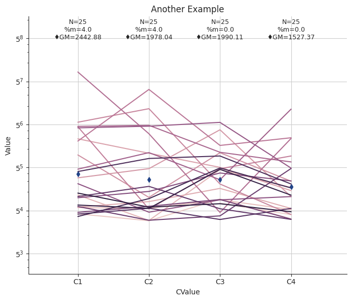

U/Graph/Categorical Plots Using catPlotter
The module cdtg include basic functions for processing data and generating plots.
import warnings
warnings.filterwarnings("ignore", category=DeprecationWarning)
warnings.filterwarnings("ignore", category=FutureWarning)
The function boxplot generates plots for a given continuous variable Y, a categorical variable X, and a categorical group variable.
To create a horizontal box plot:
from mtbp3.util.cdtg import catPlotter
cat_plot = catPlotter(None, x_col='Group', y_col='Value', y_scale_base=5, title='An Example')
cat_plot.boxplot()
/home/runner/.cache/pypoetry/virtualenvs/mtbp3-STzYEG9e-py3.10/lib/python3.10/site-packages/seaborn/categorical.py:3399: UserWarning: 33.3% of the points cannot be placed; you may want to decrease the size of the markers or use stripplot.
warnings.warn(msg, UserWarning)
/home/runner/.cache/pypoetry/virtualenvs/mtbp3-STzYEG9e-py3.10/lib/python3.10/site-packages/seaborn/categorical.py:3399: UserWarning: 30.0% of the points cannot be placed; you may want to decrease the size of the markers or use stripplot.
warnings.warn(msg, UserWarning)
/home/runner/.cache/pypoetry/virtualenvs/mtbp3-STzYEG9e-py3.10/lib/python3.10/site-packages/seaborn/categorical.py:3399: UserWarning: 20.0% of the points cannot be placed; you may want to decrease the size of the markers or use stripplot.
warnings.warn(msg, UserWarning)
To create a line plot:
cat_plot.update_parameters(group_col='CValueGroup', x_col='CValue', title='Another Example')
cat_plot.lineplot()
